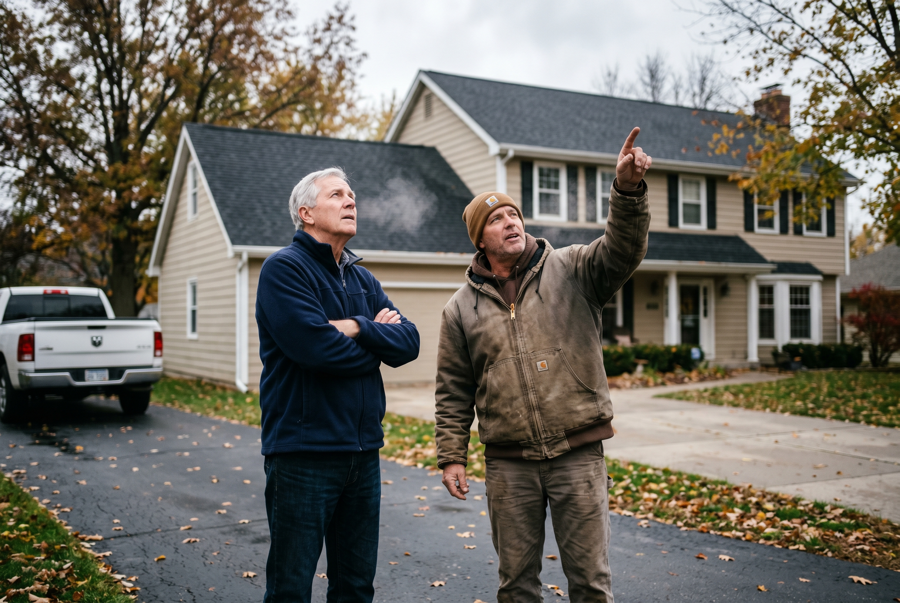
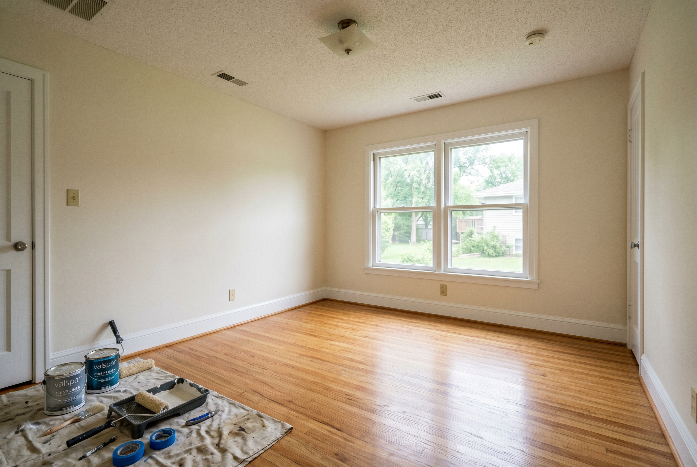

Published August 10, 2026 • By Black Ridge Contracting
Every Iowa homeowner thinking about selling runs into the same question at some point. Do I put money into the house before listing it, or do I just sell as-is and let the next person deal with it? It's a real question and the answer depends on a few things people usually don't think about.
I get asked this every week, and the honest answer is, it depends on three numbers, your capital, your timeline, and what your neighborhood comps actually reward. Let me walk through how to think about it.
The Math on Renovating Before Listing
The basic case for renovation is straightforward. You spend $20,000 to $50,000 on the right updates, and your house sells for $30,000 to $80,000 more than it would have. On paper that math is great. The problem is most homeowners pick the wrong updates and end up putting in $40,000 of work that only adds $25,000 to the sale price.
What the right updates look like in Central Iowa, the ones that consistently recover their cost plus some:
- Interior paint, neutral palette. $4,000 to $9,000 for a typical home. Recovery is usually 75 to 100 percent, sometimes more because it changes the first 30 seconds of every showing.
- Roof replacement if yours is over 15 years. $9,000 to $15,000 on most metro homes. Recovery is 60 to 80 percent, plus it kills a major buyer objection that often gets used in negotiation to knock $15,000 off price.
- Light kitchen refresh, not a full remodel. Paint or reface cabinets, swap counters, update lighting, replace appliances if they are old. $12,000 to $25,000. Recovery is around 70 percent.
- Curb appeal, paint and landscaping. $3,000 to $10,000. Hard to measure directly, but it affects how fast you get an offer and how many showings turn into bids.
What does not pencil out if you're selling in the next 12 months:
- Full kitchen remodel at $50,000+, you recover maybe 60 to 65 percent on resale
- Bathroom additions or master suite expansions, recovery is rarely above 55 percent
- Pool installation, never recoups in Iowa
- Sunroom or three-season room additions, around 45 to 55 percent recovery

When Selling As-Is Is Actually the Smarter Move
The renovation math falls apart in a few specific situations. If any of these describe your situation, just sell.
You need to close fast. If you're relocating, dealing with an estate, or moving for a job, the timeline kills the renovation play. A 4 to 12 week renovation plus 3 to 6 weeks to sell traditionally means you're looking at 4 months minimum. An investor offer can close in 14 to 30 days.
You do not have working capital. Spending $30,000 to make $50,000 only works if you have $30,000 sitting in an account. Most people don't, and taking out a renovation loan adds interest, closing costs, and timing risk.
The house needs major mechanical or foundation work. If the furnace is dying, the electrical panel is original, or the foundation is heaving, fixing all of that to "list ready" can run $80,000 to $150,000 on top of cosmetic work. Most neighborhoods don't recover that. An investor will take it as-is and just discount the price.
Your neighborhood rewards speed over polish. Some Central Iowa neighborhoods turn over fast at any price point. Buyers in those neighborhoods are not paying a premium for the granite countertop, they're paying for the location. Spending money on cosmetic updates in those markets is wasted.
The Math on Selling As-Is to an Investor
A cash investor offer in Central Iowa is typically 75 to 85 percent of what your home would sell for at retail after a renovation, assuming the renovation makes sense. The discount covers the investor's renovation cost, their carrying cost, their risk, and their margin.
For example, a $300,000 retail home that needs $30,000 of work might get an investor offer between $215,000 and $230,000 cash, close in 21 days, no contingencies, no showings, no repairs.
That gap between retail and investor offer is what you would have netted by renovating, minus the work and risk. If you don't want the work and you don't want the risk, the investor route is rational.
If you're at this decision point and want to know what an investor offer would look like on your house, our wholesaling team over at Heberer Homes handles Central Iowa sellers directly. Cash offer in 24 hours, close in two weeks, no fees.

The Hybrid Move Most People Don't Consider
There's a third option that often beats both. Do the high-ROI repairs and sell traditionally without doing the high-cost cosmetics. Paint plus roof plus curb appeal plus minor kitchen refresh. Total cost $25,000 to $40,000. Sale price moves $40,000 to $70,000 above as-is. You skip the gut renovation that doesn't recover its cost.
This works best when the house has good bones and just needs a refresh. It does not work when the mechanicals are aging or the foundation is moving. Run through the checklist before going this route.
How to Decide in 10 Minutes
Walk through these questions, honest answers:
- How fast do I need to close? Under 60 days, sell as-is. Over 90 days, renovation is on the table.
- Do I have $25,000 to $40,000 sitting in an account for pre-list work? No, sell as-is. Yes, keep reading.
- Is my roof over 15 years old, electrical original, or furnace over 20 years? If yes, those need addressing before any cosmetic work makes sense. If multiple yes, sell as-is.
- Does my neighborhood reward polished homes with higher price per square foot than average sales? If yes, renovate. If no, sell as-is or do the hybrid.
Most of the homeowners I talk to who think they should renovate end up better off doing the hybrid. Most who think they should sell as-is end up doing the hybrid. The middle path is usually right.
Want a Real Number?
If you're sitting on this decision and want a contractor's read on what your house actually needs versus what it doesn't, we do free walkthroughs across Central Iowa. We'll tell you what's worth doing, what's not, and what it would cost. See our remodeling services or call us at (515) 219-4654 to set up a walkthrough.
And if the answer is just sell, that's fine too. Heberer Homes will give you a cash offer the same day.
Frequently Asked Questions
It depends on three things, how much capital you have to put in, how fast you need to move, and what the comp set in your specific neighborhood rewards. Renovating a $300,000 home with $40,000 of strategic updates usually nets between $20,000 and $50,000 more on the sale, but only if the renovations match buyer expectations.
Interior paint (75 to 100 percent recovery), roof replacement if the roof is over 15 years old (60 to 80 percent recovery plus removes a buyer objection), and a kitchen refresh under $20,000 (around 70 percent recovery).
A typical pre-sale renovation runs 4 to 12 weeks depending on scope. Paint and minor repairs can wrap in 2 weeks. A roof replacement is 3 to 5 days of on-site work. A kitchen refresh is 4 to 6 weeks.
Sell as-is when you need to close in 30 days or less, you do not have working capital, the home needs major mechanical or foundation work, you are dealing with an estate or relocation, or your neighborhood rewards speed over polish.